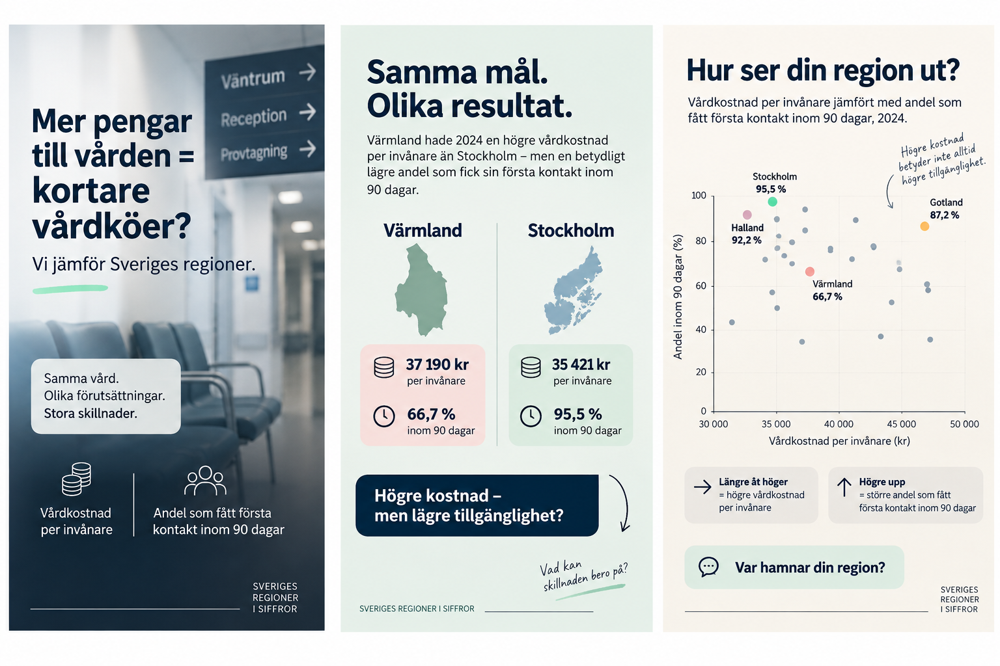

Kursuppgift
Presentation av insamlad data, analys och förslag på innehåll.
Utgångspunkt
Jag undersöker regionala skillnader i svensk sjukvård, med fokus på data från 2024. Jag jämför nettokostnaden för hälso- och sjukvård per invånare med andelen patienter som fått en första kontakt inom specialiserad vård inom 90 dagar.
Syftet är att göra statistiken lättillgänglig och väcka intresse för de regionala skillnaderna i svensk sjukvård.
Innehållet utgår från frågan: Hur hänger regionernas vårdkostnader ihop med tillgängligheten till vård?
Jämförelsen kan visa samband, men förklarar inte orsakerna bakom skillnaderna. Högre eller lägre kostnader betyder inte i sig att tillgängligheten blir bättre eller sämre.
Contentstrategi
Instagram — huvudkanalen
Innehållsserien bygger på datagrafik, diagram och regionala jämförelser med korta, lättillgängliga budskap. Instagram är huvudkanalen för att visa datan visuellt och bjuda in till engagemang genom frågor som ”Hur ser det ut i din region?”.
”Mer pengar till vården = kortare vårdköer?” introducerar serien som en öppen fråga, inte som ett påstående om orsak och verkan.
LinkedIn — uppmärksamhet och sammanhang
LinkedIn-inlägget presenterar undersökningen i ett bredare sammanhang för en professionell målgrupp. En kort sammanfattning väcker intresse och hänvisar vidare till den visuella innehållsserien på Instagram, där läsaren kan utforska jämförelserna och delta i samtalet om datan.
Portfolion — presentation av kursuppgiften
Här presenteras arbetet, innehållsplanen och exempel på producerat content för läraren. Portfolion ingår inte som publiceringskanal i innehållsplanen.
Innehållsplan
Planen visar hur innehållet skulle kunna publiceras under en arbetsvecka. Instagram är huvudkanalen för den visuella innehållsserien, medan LinkedIn används för att lyfta undersökningen i ett bredare sammanhang och leda intresserade vidare till serien på Instagram. Av de fem planerade inläggen tas ungefär 2–3 fram som visuella prototyper för kursuppgiften.
| Dag | Plattform | Innehåll | Format | Syfte |
|---|---|---|---|---|
| Måndag | Mer pengar till vården = kortare vårdköer? | Teaser/datagrafik | Väcka nyfikenhet och introducera frågan. | |
| Tisdag | Stockholm vs Värmland | Datagrafik | Visa en tydlig regional kontrast. | |
| Onsdag | Hur ser din region ut? | Scatterplot/datavisualisering med regionerna | Visa helheten och låta läsaren hitta sin egen region. | |
| Torsdag | Gotland vs Halland | Datagrafik | Visa ytterligare en regional jämförelse. | |
| Fredag | Presentation av undersökningen som helhet | Kort datadrivet LinkedIn-inlägg + hänvisning till Instagram | Nå en professionell målgrupp, skapa intresse för undersökningen och leda vidare till innehållsserien på Instagram. |
Producerat innehåll
Tre visuella prototyper för Instagram: en introduktion till huvudfrågan, en jämförelse mellan Värmland och Stockholm samt en översikt över regionerna.

Data & källa
Underlaget består av regional data från Kolada för åren 2021–2024. Analysen jämför nettokostnaden för hälso- och sjukvård totalt (inklusive läkemedel), kronor per invånare, med genomförd första kontakt inom högst 90 dagar i specialiserad vård, andel (%).
De producerade innehållsexemplen fokuserar främst på 2024 för att göra de regionala jämförelserna tydliga. Det bakomliggande datasetet omfattar samtliga fyra år: 2021, 2022, 2023 och 2024.
Datakälla: Kolada
Period: 2021–2024
Fokus i innehållsexemplen: 2024